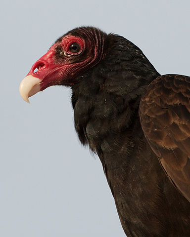
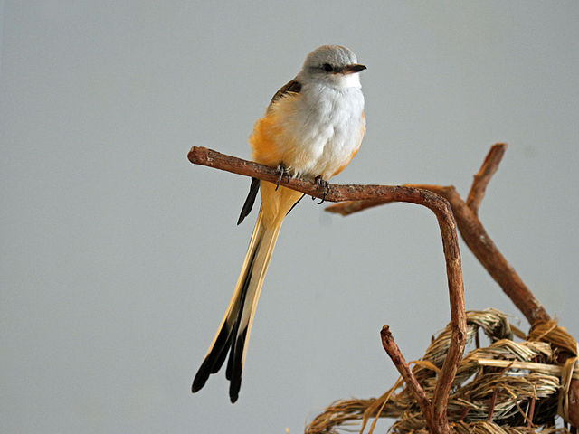
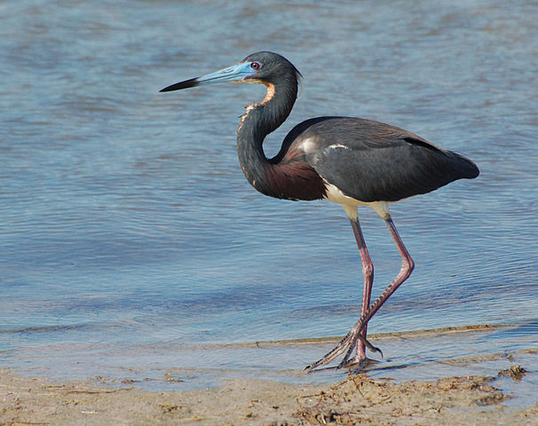

Birds that are protected in Texas
The birds shown below may not be killed, taken from the nest, picked up, or possessed for any reason, and their feathers may not be possessed or sold. They must not be used in arts and crafts under any circumstances.
Red Tailed Hawk
The red-tailed hawk is a bird of prey that breeds throughout most of North America.
Turkey Vulture
The turkey vulture is a scavenger and feeds almost exclusively on carrion
Scissor-tailed flycatcher
The scissor-tailed flycatcher is also known as the Texas bird-of-paradise. They build a cup nest in isolated trees or shrubs, sometimes using artificial sites such as telephone poles near towns.
Tricolored herons
Tricolored herons breed in swamps and other coastal habitats.
Other birds that are protected
- Blue Jay
- House Finch
- Tufted Titmouse
- Roadrunner
- Brown Pelican
Here is the complete published list.